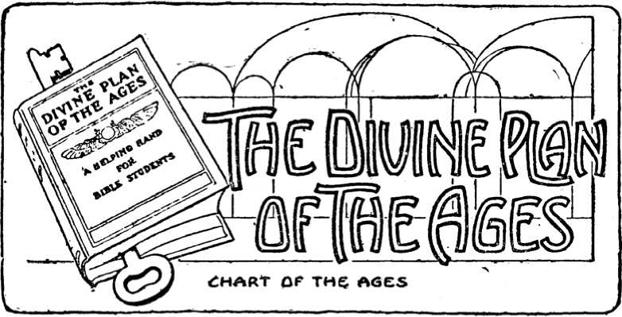

OTHER SIGNIFICANT TYPES.
The Court Posts. —The White Curtains. —The Silver Hooks —The Door Posts Of The Holy And The Most Holy. —The Golden Table. — The Golden Candlestick. — Antitypical Priests Who See The Deep Things And The Levites Who Do Not See Them. —The Golden Altar. —The Ark Of The Covenant In The Most Holy. —Its Contents And Their Significance. —The Mercy Seat. —The Two Cherubim. —The Priest Unblemished. —The Mystery Hid From Ages.
IN THE preceding description we have purposely omitted an explanation of some interesting details, which can now be better understood by those who have; through careful study, obtained a clear understanding of the general plan of the Tabernacle, its services and its typical significance.
The posts which stood in the "Court," and upheld the white curtains, represented justified believers, —the "Court," as we have already seen, represented the justified condition! The posts were of wood, a corruptible material, thus implying that the class typified are not actually perfect as human beings; for since human perfection was typically represented by copper, those posts should either have been made of copper, or covered with copper, to represent actually perfect human beings. But although made of wood they were set in sockets of copper, which teaches us that, though actually imperfect, their standing is that of perfect human beings. It would be impossible to more clearly represent justification by faith.
The white curtain, which, sustained by those posts, formed the "Court," well illustrated the same justification or purity. Thus, justified ones should continually hold up to the view of the world (the "Camp") the pure linen, representing Christ's righteousness as their covering.
The silver hooks, by which the posts held up the curtain, were symbolic of truth. Silver is a general symbol of truth. The justified believers, represented by the posts in the "Court," can thus really and truth fully claim that Christ's righteousness covers all their imperfections. (Exod. 27:11-17.) Again, it is only by the aid of the truth that they are able to hold on to their justification.
The door posts at the entrance to the Tabernacle —at the "door" of the "Holy" —were covered by the first "Vail." They were totally different from the posts in the "Court," and represented "new creatures in Christ" —the consecrated saints. The difference between these and the posts in the "Court" represents the difference between the condition of the justified believers and the sanctified believers. The consecration to death of a justified man we have seen is the way into the "Holy" —passing through the death of the human will, the fleshly mind, the first vail. Hence these posts should illustrate this change, and so they do; for they were covered with gold, symbolic of the divine nature. Their being set in sockets of copper represented how "we have this treasure [the divine nature] in earthen vessels" (2 Cor. 4:7); i. e., our new nature is still based upon, and rests in, our justified humanity. This, it will be remembered, corresponds exactly with what we found the "Holy" to symbolize, viz., our place or standing as new creatures, not yet perfected. —Exod. 26:37.
The door posts of the "Most Holy" were just inside the second "Vail," and represented those who pass beyond the flesh (vail) entirely, into the perfection of the spiritual condition. These posts were so constructed as fully to illustrate this. Covered with gold, representing divine nature, but no longer set in sockets of copper —no longer dependent on any human condition —they were set in sockets of silver (reality, truth, verity) seeming to say to us, When you come inside this vail you will be perfect — really and truly new creatures. —Exod 26:32.
The Golden Table, which in the "Holy" bore the shew-bread, represented the Church as a whole, including Jesus and the apostles —all the sanctified in Christ who serve in "holding forth the word of life." (Phil 2:16.) The great work of the true Church during this age has been to feed, strengthen and enlighten all who enter the covenanted spiritual condition. The Bride of Christ is to make herself ready. (Rev. 19:7.) The witnessing to the world during the present age is quite secondary and incidental. The full blessing of the world will follow in God's "due time," after the Gospel age (the antitypical Day of Atonement with its sin-offerings) is ended.
The Golden Candlestick or lampstand, which stood opposite the Golden Table, and gave light to all in the "Holy," was of gold —all of one piece hammered out. It had seven branches, each of which held a lamp, making seven lamps in all —a perfect or complete number. This represented the complete Church, from the Head, Jesus, to and including the last member of the "little flock" that he is taking out from among men, to be partakers of the divine (gold) nature. Our Lord says, "The seven candlesticks which thou sawest are the seven churches" (Rev. 1: 20) —the one Church whose seven stages or developments were symbolized by the seven congregations of Asia Minor. (Rev. 1:11.) Yes; that candlestick represented the entire Church of the First-born — not the nominal, but the true Church, whose names are written in heaven —the true light-bearers —the "Royal Priesthood."
The form of its workmanship was beautiful —a fruit and a flower, a fruit and a flower, following successively, — representing the true Church as both beautiful and fruitful from first to last. The lamp part on top of each branch was shaped like an almond, the significance of which we shall see when considering the significance of Aaron's rod.
The light from this lamp was from olive oil, "beaten" or refined; and the lamps were kept always lighted. This oil was symbolic of the holy spirit, and its light represented holy enlightenment —the spirit of the truth. Its light was for the benefit of the priests only, for none others were ever permitted to see it or to profit by its light. Thus was represented the spirit or mind of God given to enlighten the Church, in the deep things of God, which are entirely hidden from the natural man (1 Cor. 2:14), even though he be a believer —a justified man (a Levite). None but the truly consecrated, the "Royal Priesthood," are permitted to see into this deeper light, hidden in the "Holy." The priests (the consecrated Body of Christ) always have access to the "Holy"; it is their right and privilege; it was intended for them. (Heb. 9:6;) The Levite class cannot see in because of the vail of human-mindedness which comes Between them and the sacred things; and the only way to set it aside is to consecrate and sacrifice wholly the human will and nature.
The lights were to be trimmed and replenished every morning and evening by the High Priest —Aaron and his sons who succeeded him in office. (Exod. 27:20, 21; 30:8.} So our High Priest is daily filling us more and more with. the mind of Christ, and trimming off the dross of the old nature —the wick through which the holy spirit operates.
ANTITYPICAL PRIESTS AND LEVITES.
Are we sometimes puzzled to know why some religious people cannot see any but natural things —cannot discern the deeper spiritual truths of the Word? —why they can see restitution for natural men, but cannot see the divine, heavenly calling? These Tabernacle lessons show us why this is. They are brethren in justification, of "the household of faith," but not brethren in Christ —not fully consecrated, —not sacrificers. They are Levites —in the "Court": they never consecrated as priests, to sacrifice their human rights and privileges, and consequently cannot enter the "Holy," nor see the things prepared for the priestly class only. The natural "eye hath not seen, nor ear heard — neither have entered into the heart of man the things which God hath prepared for them that love him. But God hath revealed them unto us [who through consecration have become 'new creatures,' called to become 'partakers of the divine nature,'] by his spirit [light of the lamp], for the Spirit searcheth [revealeth] all things —yea, the deep [hidden] things of God." —1 Cor. 2:9.
The church nominal has always included both the justified and sanctified classes —Levites and priests —as well as hypocrites. In the Apostle Paul's letters certain parts were addressed to the justified class (Levites) who had not fully consecrated. Thus he writes to the Galatians that "They that are Christ's have crucified the flesh with the affections and lusts." (Gal. 5:24.) He thus seems to imply that only some of them had complied with the Gospel call to sacrifice —crucifixion of the flesh.
In the same way he addressed the Romans (12:1); "I beseech you, therefore, brethren [believers —justified by faith in Christ —Levites], by the mercies of God [manifest through Christ in our justification], that ye present your bodies a living sacrifice [that you consecrate wholly —thus becoming priests], holy, acceptable unto God." All who in heart renounce sin and accept God's grace in Christ are justified freely by faith in Jesus, —God accepting them as reckonedly sinless or holy; and such sacrificers and their offerings God has declared himself willing to accept through Christ during this Atonement Day (the Gospel age) and until the full elect number of the royal priesthood is completed. "Now is the acceptable time" —the time when such offerings will be accepted. True, as we have just seen, God will accept sacrifices of the world, and it will always be the only proper course for all to pursue, —to render unto the Lord their purchased beings. But after this age is ended, none will be permitted to sacrifice unto death and sufferings —such sacrifices will be impossible after the new age and its regulations are inaugurated.
It seems evident that by far the larger proportion of the early churches (much more so of the modern worldly mixture, the confused "Babylon" of the present day) were not consecrated to death, and consequently were not of the antitypical "royal priesthood," but merely Levites, doing the service of the Sanctuary, but not sacrificing.
Looking back at the type in the Law, we find that there were 8,580 Levites appointed in the typical service, while only five priests were appointed for the typical sacrificing. (Num. 4:46-48; Exod. 28:1.) It may be that this, as much as the other features of the "shadow," was designed to illustrate the proportion of justified believers to self-sacrificing, consecrated ones. Though now the nominal Church numbers millions, yet, when an allowance is made for hypocrites, and when only one in each seventeen hundred of the remainder is supposed to be a living sacrifice (though few, yet a correct proportion according to the type), it seems quite evident that the Lord did not make a mis-statement when he said that those (the "royal Priesthood") who would receive the kingdom would be a "little flock." (Luke 12:32.) And when we remember that two of the five priests were destroyed by the Lord, in symbol of the death4 of negligent and unfaithful priests, we find the proportion of 3 priests to 8,580 Levites to be only 1 to 2,800. The fact that we see believers who are trying to put away their sins is not of itself evidence of their being "priests"; for Levites as well as priests should practice "circumcision of the heart" —"putting away the filth [sins] of the flesh." All this is symbolized in the Laver of water in the "Court," at which both priests and Levites washed. Nor is a spirit of meekness, gentleness, benevolence and morality always indicative of consecration to God. These qualities belong to a perfect natural man (the image of God), and occasionally they partially survive the wreck of the fall. But such evidences not infrequently pass as proofs of full consecration in the nominal Church.
Even when we see believers practicing self-denial in some good work of political or moral reform, that is not an evidence of consecration to God, though it is an evidence of consecration to a work. Consecration to God says, Any work, anywhere; "I delight to do thy will, O God"; thy will, in thy way, be done. Consecration to God, then, will insure a searching of his plan revealed in his Word, that we may be able to spend and be spent for him and in his service, in harmony with his arranged and revealed plan. Marvel not, then, that so few have ever seen the glorious beauties within the Tabernacle: only priests can see them.
The Levites may know of them only as they hear them described. They have never seen the hidden light and beauty; never eaten of the "bread of presence"; never offered the acceptable incense at the "Golden Altar." No: to enjoy these, they must pass the "Vail" —into entire consecration to God in sacrifice during the Atonement Day.
The Golden Altar in the "Holy" would seem to represent the "little flock," the consecrated Church in the present sacrificing condition. From this altar ascends the sweet incense, acceptable to God by Jesus Christ —the willing services of the priests: their praises, their willing obedience —all things whatsoever they do to the glory of God. Those who thus offer incense acceptable to God (1 Pet. 2: 5) come very close to their Father —close up to the "Vail" which separates from the "Most Holy"; and if they have requests to make they may be presented with the incense — "much incense with the prayers of saints." (Rev. 8:3.) The prayers of such priests of God are effectual. Our Lord Jesus kept the incense continually burning, and could say, "I know that thou nearest me always." (John 11:42.) So the under-priests, "members of his Body," will be heard always if they continually offer the incense of faith, love and obedience to God: and none should expect to have requests recognized who do not thus keep their covenant — "If ye abide in me and my words [teachings] abide in you, ye shall ask what ye will and it shall be done unto you." (John 15:7.) The necessity of a clear apprehension of Christ's teachings as a guide to our requests and expectations, that we may not "ask amiss" and out of harmony with God's plan, is clearly shown by this scripture —but seldom noticed.
We have learned, through types previously considered, something of the glory of the "Most Holy" (the perfect, divine condition), which no man can approach unto (1 Tim. 6:16), but to which the "new creatures in Christ Jesus" made partakers of the divine nature — will finally come, when the incense-offering on the part of the entire Body of Christ, the "Royal Priesthood," is finished, and the cloud of perfume goes before them into Jehovah's presence, that they may live beyond the "Vail," being acceptable to God by Jesus Christ, their Lord.
WITHIN THE MOST HOLY.
The Ark of the Covenant or "Ark of the Testimony" was the only article of furniture in the Most Holy. (See Heb. 9:2-4 and Diaglott foot note.) Its name suggests that it illustrated the embodiment of Jehovah's plan, which he had purposed in himself, before the beginning of the creation of God, —before the minutest development of his plan had taken place. It represented the eternal purpose of God —his foreordained arrangement of riches of grace for mankind in the Christ (Head and Body) —"the hidden mystery."5 It therefore represents Christ Jesus and his Bride, the "little flock," to be partakers of the divine nature, and to be imbued with the power and great glory — the prize of our high calling —the joy set before our Lord, and all the members of his Body.
As before stated, it was a rectangular box overlaid with gold, representing the divine nature granted to the glorified Church. It contained the two Tables of the Law (Deut. 31:26), Aaron's Rod that budded (Num. 17.8), and the Golden Pot of Manna (Exod. 16:32). The Law showed how the Christ would meet in Ml all the requirements of God's perfect Law, and also that legal authority would be vested in him as the Law-executor.
The righteousness of the Law was actually fulfilled in our Head, and it is also reckonedly fulfilled in all the new creatures in
Christ, "who walk not after the flesh but after the Spirit"; i. e., who walk in obedience to the new mind. (Rom. 8:1.) The infirmities of the old nature which we are daily crucifying, once covered by our ransom-price, are not again charged to us as new creatures —so long as we abide in Christ.
When it is written that "the righteousness of the Law is fulfilled in us," it signifies that the end of our course (perfection) is reckoned to us, because we are walking after or toward that actual perfection which, when reached, will be the condition in the "Most Holy," represented by the Ark of the Covenant.
THE CONTENTS OF THE ARK.
"Aaron's Rod that budded" showed the elect character of all the Body of Christ, as members of the "Royal Priesthood." By reading Numbers 17, the meaning of the budded rod will be seen to be Jehovah's acceptance of Aaron and his sons —the typical priesthood, representatives of Christ and the Church — as the only ones who might perform the priest's office of mediator. That rod, therefore, represented the acceptableness of the "Royal Priesthood" —the Christ, Head and Body. The rod budded and brought forth almonds. A peculiarity about the almond tree is that the fruit-buds appear before the leaves. So with the "Royal Priesthood": they sacrifice or begin to bring forth fruit before the leaves of professions are seen.
The Golden Pot of Manna represented immortality as being one of the possessions of the Christ of God. Our Lord Jesus doubtless refers to this when he says: "To him that overcometh will I give to eat of the hidden manna." —Rev. 2:17.
Manna was the bread which came down from heaven as a life-sustainer for Israel. It represented the living bread, supplied to the world by God through Christ. But as the Israelites needed to gather this supply of manna daily or else want and starve, so
it will be necessary for the world ever to seek supplies of life and grace if they would live everlastingly.
But to those who become Christ's joint-heirs, members of the Anointed Body, God makes a special offer of a peculiar sort of manna, the same and yet different from that given to others — "the hidden manna." One peculiarity of this pot of manna was that it was incorruptible; hence it well illustrates the immortal, incorruptible condition promised to all members of the "Seed" — which is the Church. The manna or life-support fed to Israel was not incorruptible, and must therefore be gathered daily. So all the obedient of mankind who shall by and by be recognized as Israelites indeed, will be provided with life everlasting, but conditional, supplied and renewed life; while the "little flock," who under present unfavorable conditions are faithful "overcomers," will be given an incorruptible portion — immortality.* —Rev. 2:17.
Here, then, in the golden Ark, was represented the glory to be revealed in the divine Christ: in the budded rod, God's chosen priesthood; in the tables of the Law, the righteous Judge; in the incorruptible manna in the golden bowl, immortality, the divine nature. Above this Ark, and constituting a lid or head over it, was
"The Mercy Seat" —a slab of solid gold, on the two ends of which, and of the same piece of metal, were formed two cherubim, with wings uplifted as if ready to fly, the faces looking inward toward the center of the plate on which they stood. Between the cherubim, on the "Mercy Seat," a bright light represented Jehovah's presence. As the Ark represented the Christ, so the "Mercy Seat," Glory-light and Cherubim together represented Jehovah God —"the Head of Christ is God." (1 Cor. 11:3.) As with Christ, so with Jehovah, he is here represented by
things which illustrate attributes of his character. The light, called the "Shekinah glory," represented Jehovah himself as the Light of the universe, as Christ is the Light of the world. This is abundantly testified by many Scriptures. "Thou that dwellest between the cherubim, shine forth." —Psa. 80:1; 1 Sam. 4:4; 2 Sam. 6:2; Isa. 37:16.
Humanity cannot enter Jehovah's presence: hence the royal priest, Head and Body, represented by Aaron, must become new creatures, "partakers of the divine nature" (having crucified and buried the human), before they can appear in the presence of that excellent glory.
The slab of gold called the "MERCY SEAT" (or more properly the Propitiatory, because on it the Priest offered the blood of the sacrifices which propitiated or satisfied the demands of divine justice) represented the underlying principle of Jehovah's character — justice. God's throne is based or established upon Justice. "Righteousness and justice are the foundation of thy throne." —Psa. 89:14; Job 36:17; 37:23; Isa. 56:1; Rev. 15:3.
The Apostle Paul uses the Greek word for Mercy Seat or Propitiatory (hilasterion) when referring to our Lord Jesus, saying, —"Whom God hath set forth to be a Propitiatory6 [or Mercy Seat] ... to declare his righteousness .... that he might be
just and the justifier of him which believeth in Jesus." (Rom. 3:25, 26.) The thought here is in accord with the foregoing presentation. The Justice, the Wisdom, the Love and the Power are God's own as well as the plan by which all these co-operate in human salvation: but it pleased God that in his well beloved Son, our Lord Jesus, all of his own fullness should dwell, and be represented to mankind. Thus in the type the High Priest coming forth from the Most Holy, was the living representative of Jehovah's Justice, Wisdom, Love and Power to men —the living representative of divine mercy, forgiveness, appeasement. Although the divine being is veiled, hidden from human sight, his divine attributes are to be displayed to all men by our great High Priest, who, as the living Mercy Seat, will at the close of this age draw nigh to mankind and make all to understand the riches of divine grace.
The Two Cherubim represented two other elements of Jehovah's character, as revealed in his Word, viz., divine Love and divine Power. These attributes, Justice, the foundation principle, and Love and Power of the same quality or essence, and lifted up out of it, are in perfect harmony. They are all made of one piece: they are thoroughly one. Neither Love nor Power can be exercised until Justice is fully satisfied. Then they fly to help, to lift up and to bless. They were on the wing, ready, but waiting; looking inward toward the "Mercy Seat," toward Justice, to know when to move.
The High Priest, as he approached with the blood of the Atonement sacrifices, did not put it upon the Cherubim. No: neither divine Power nor divine Love independently required the sacrifice; hence the High Priest need not sprinkle the Cherubim. It is the Justice quality or attribute of God that will by no means clear the guilty, as it was Justice that said: "The wages of sin is death." When, therefore, the High Priest would give a ransom for sinners, it is to Justice it must be paid. Hence the appropriateness of the ceremony of sprinkling the blood upon the "Mercy Seat" —the PROPITIATORY.
Love led to the whole redemptive plan. It was because God so loved the world that he sent his only begotten Son to redeem it by paying to Justice the ransom-price. So Love has been active, preparing for the redemption ever since sin entered; yes, from "before the foundation of the world." —1 Pet. 1:20.
"Love first contrived the way To save rebellious man,"
When the Atonement Day sacrifices (bullock and goat) are complete, Love tarries to see the results of its plan. When the blood is sprinkled Justice cries, It is enough; it is finished! Then comes the moment when Love and Power may act, and swiftly they wing their flight to bless the ransomed race. When Justice is satisfied, Power starts upon its errand, which is co-extensive with that of Love, using the same agency —Christ, the Ark or safe depository of divine favors.
The relationship and oneness of that divine family —the Son and his Bride, represented by the Ark, in harmony and oneness with the Father, represented by the Cover — was shown in the fact that the "Mercy Seat" was the lid of the Ark, and hence a part —the top or head of it. As the head of the Church is Christ Jesus, so the head of the entire Christ is God. (1 Cor. 11:3.) This is the oneness for which Jesus prayed, saying, "I pray not for the world, but for those whom thou hast given me" —"that they all may be one; as thou, Father, art in me, and I in thee, that they also may be one in us, that the world may [then] believe." —John 17:9, 21.
THE PRIEST UNBLEMISHED.
It is significant also that any member of the priesthood that had a blemish of eye, hand, nose, foot, or of any part, could not fill the office of Priest (High Priest); neither any man having any superfluity, such as an extra finger or toe.
This teaches that every member of the Body of Christ glorified will be complete —lacking nothing; and also that there will be in that "little flock" neither one too many nor one too few, but exactly the foreknown and foreordained number. When once the Body of Christ is complete, there will be no further additions, — no superfluity. All, therefore, who have been "called" with this "high calling" to become members in particular of the Body of Christ, and have accepted it, should earnestly seek to make their calling and election (as members of that "little flock") sure, by so running as to obtain the prize. If any such be careless, and miss the prize, some one else will win in his place, for the Body will be complete; not one member will be lacking, and not one superfluous. Take heed, "let no man take thy crown." —Rev. 3:11.
"THE MYSTERY HID FROM AGES AND GENERATIONS." —COL. 1:26. —
It has been a matter of surprise to some that the glory and beauty of the Tabernacle —its golden walls, its golden and beautifully engraved furniture, and its vails of curious work — were so completely covered and hidden from view of the people; even the sunlight from without being excluded —its only light being the Lamp in the Holy and the Shekinah glory in the Most Holy. But this is perfectly in keeping with the lessons we have received from its services. As God covered the type and hid its beauty under curtains and rough, unsightly skins, so the glories and beauties of spiritual things are seen only by those who enter the consecrated condition —the "Royal Priesthood." These enter a hidden but glorious state which the world and all outside fail to appreciate. Their glorious hopes and also their standing as new creatures are hidden from: their fellow men.
"Ah, these are of a royal line, All children of a King, Heirs of immortal crowns divine, And lo, for joy they sing!
"Why do they, then, appear so mean? And why so much despised? Because of their rich robes unseen The world is not apprised."
Volume I. “Studies in the Scriptures” Series
THINGS YOU OUGHT TO KNOW AS
CHRISTIAN BIBLE STUDENTS
THE SATISFACTORY PROOFS THAT
The Bible is a Divine Revelation—reasonable and trustworthy, revealing a systematic Plan full of Justice, Wisdom and Love. “The Key of Knowledge” of the Scriptures, long lost is found, and gives God's faithful people access to the “Hidden Mystery.” — Luke 11:52, Col. 1:36.
The Lord Jesus and His faithful are to be not only priests but kings, and will reign over the earth.
This Kingdom is to come at Christ's Second Advent. God’s Plan is to select and save the Church in the Gospel Age, and to use this Church in blessing the world in the Millennium. A “ransom for all” implies an opportunity to all for restitution. The Day of, Judgment is 1,000 years long—the world's trial day.
“The narrow way” of self-sacrifice will cease with' this Age.
“The highway” of righteousness will be open to all the redeemed race in the Millennium.—Isa. 35:8, 9.
“The kingdoms of this world” are but for an ordained period and must give place to the “Kingdom of Heaven.”
God hat permitted evil for six thousand years for a wise purpose.
These subjects any many others of deep interest to all of God's people are discussed tally and in language easy of comprehension in